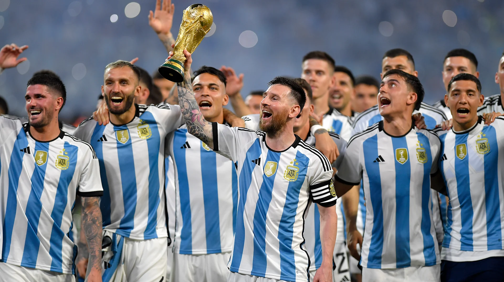
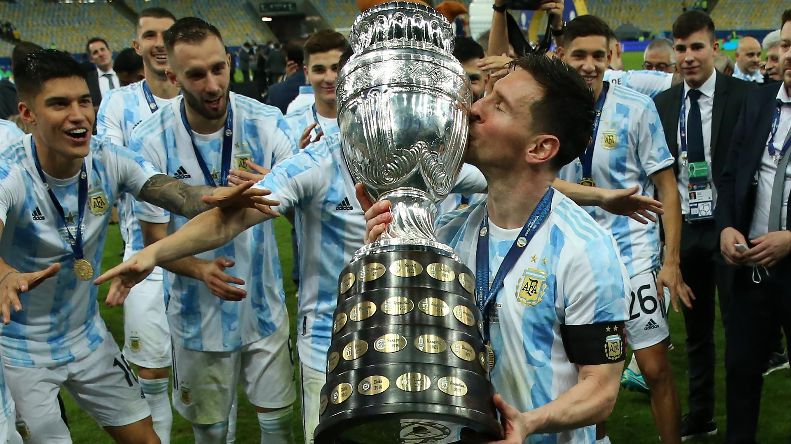

Argentina se erige como un coloso en el firmamento del fútbol mundial, con un palmarés que reluce con destellos de grandeza y una historia tejida con triunfos memorables. Con tres coronas en la Copa del Mundo, obtenidas en los años 1978, 1986 y recientemente en 2022, la albiceleste ha forjado una reputación legendaria en los escenarios más prestigiosos del balompié global.
No menos impresionante es su dominio en la Copa América, el torneo de selecciones más antiguo del mundo, donde Argentina se erige como el equipo más ganador, levantando el trofeo en quince ocasiones: 1921, 1925, 1927, 1929, 1937, 1941, 1945, 1946, 1947, 1955, 1957, 1959, 1991, 1993 y el año recién pasado, en 2021. Estos triunfos no solo son testimonio de su calidad futbolística, sino también de su resiliencia y espíritu competitivo.
Pero el palmarés argentino va más allá de los torneos continentales y mundiales. En la Copa de las Confederaciones, una competición que reúne a los campeones de las distintas confederaciones, Argentina se alzó con el trofeo en 1992, demostrando su capacidad para brillar en la escena internacional.
Además, la selección argentina ha dejado su huella en torneos menos conocidos pero igualmente significativos. En el Campeonato Panamericano de Fútbol, celebrado en 1960 en Costa Rica, Argentina conquistó el título, consolidando su estatus como una potencia futbolística emergente en América.
No podemos pasar por alto los éxitos en la Finalissima, una competición de carácter amistoso pero que ha servido para que Argentina reafirme su grandeza. En 1993 y nuevamente en 2022, la albiceleste se alzó con el trofeo, demostrando su capacidad para triunfar en cualquier escenario.
En resumen, Argentina no solo es sinónimo de fútbol, sino también de una pasión desbordante, un talento innato y una historia repleta de gloria. Su legado perdurará en la memoria de generaciones, inspirando a futuros futbolistas a alcanzar las alturas más elevadas en el deporte rey.